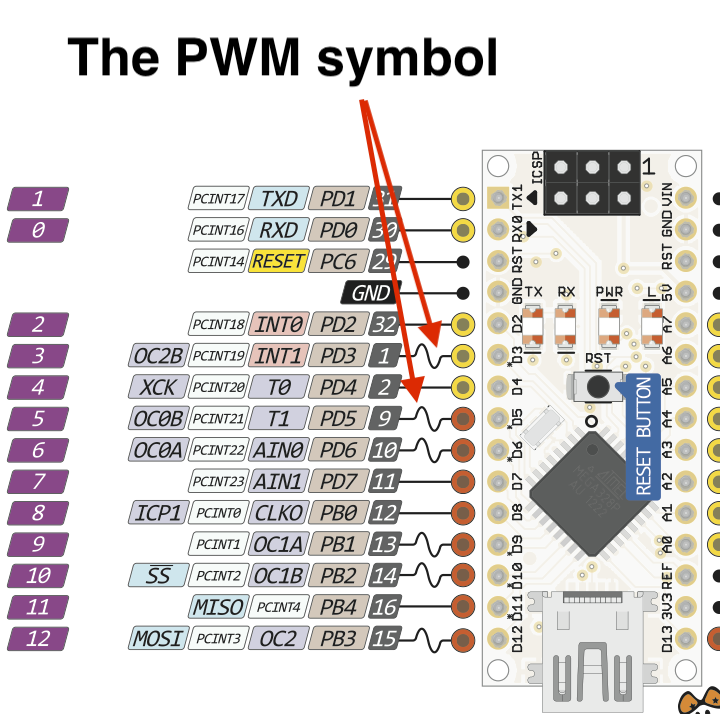

Pulse Width Modulation (PWM)
1 AnalogWrite
Learn It
- Pulse Width Modulation, or PWM, is a technique for getting analog results with digital means.
- Digital control is used to create a square wave, a signal switched between on and off.
- This on-off pattern can simulate voltages in between full on (5 Volts) and off (0 Volts) by changing the portion of the time the signal spends on versus the time that the signal spends off.
- The duration of "on time" is called the pulse width. To get varying analog values, you change, or modulate, that pulse width.
- If you repeat this on-off pattern fast enough with an LED for example, the result is as if the signal is a steady voltage between 0 and 5v controlling the brightness of the LED.
- This duration or period is the inverse of the PWM frequency. In other words, with Arduino's PWM frequency at about 500Hz, the green lines would measure 2 milliseconds each.
- A call to analogWrite() is on a scale of 0 - 255, such that analogWrite(255) requests a 100% duty cycle (always on), and analogWrite(127) is a 50% duty cycle (on half the time) for example.
- You learned about PWM when you did the 555 Fan project in Year 8.
Build It
- It is important to note that not all the output pins on the Arduino can be used as PWM output pins.

- We have been using Pin 2 as an output, but we will now need to use pin 3 as a PWM output, so move the 330 ohm resistor and the LED to pin 3.

- Lets now write a basic program to adjust the brightness of the LED using the POT.
- This will use all of the skills you have previously learned.
- Start a new sketch and call it PWM.
- Now write the following code into the sketch.
- You will need t oknw the following Comparison Operators to understand this program.
- The adjustment will be very sensitive, as can be seen in the video below.
Badge It
- Silver: Complete the sample program and upload it to your Arduino. Take a screenshot of this and upload it to www.bournetolearn.com
- Gold: Have at least 5 different steps in the code to make the brightness change more progressively, upload it to www.bournetolearn.com.
- Platinum: Have at least 15 different steps in the code to make the LED get brighter and dimmer very smoothly, upload it to www.bournetolearn.com.